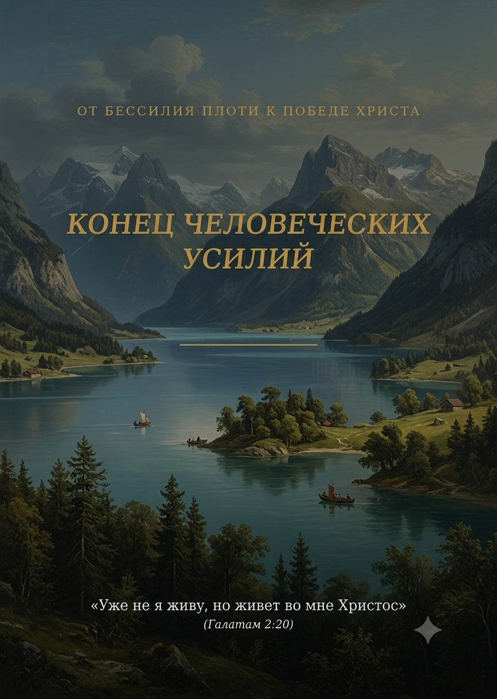

Эту книгу не стоит читать как богословский учебник или набор новых правил для духовного самосовершенствования; в ней раскрывается драгоценная весть о праведности по вере. Она родилась не в чиновничьих кабинетах и не из стремления человеческого «я» показать свою мудрость. Это простые записи, рожденные в тишине уединенного молитвенного общения, когда человеческий шум замолкает, а душа признает свою полную немощь.
Господь всегда открывал Своим верным служителям ту актуальную «истину для настоящего времени», которая жизненно важна именно для их поколения. В вестях к Лаодикийской церкви Он обнажает главную проблему наших дней — проблему внешнего благочестия при глубоком внутреннем банкротстве. Возвращение нашего Господа задерживается не потому, что у Бога не готов план, а потому, что Церковь всё еще пытается приготовиться своими силами, скрывая под маской религиозности глубинную гордыню — ту самую язву, от которой бедные законники и бедные грешники одинаково изнемогают.
Но величайшая тайна Евангелия заключается в Воплощении Иисуса Христа. Сын Божий сошел в самую глубину нашего падшего естества, приняв нашу немощную плоть, чтобы победить грех прямо в ней. В Своем Воплощении Он показал, что побеждающий христианин живет не напряжением собственной воли, а Творческой силой Святого Духа. И чтобы выстоять в испытаниях последнего времени и встретить Спасителя живыми, нам необходим именно этот опыт — понимание того, чьей силой мы движимы.
Эта книга написана с одной единственной целью — чтобы человеческое «я» смогло наконец сложить свое оружие и капитулировать. Чтобы ты, дорогой читатель, перестал искать силу в себе и открыл дверь Опыту Замещения: когда живой Христос, принявший когда-то наше естество, входит в пустоту твоего сердца и Сам становится твоей праведностью, миром и победой. Пусть эти страницы станут для тебя прозрачным стеклом, через которое виден только Он.
Человеческое естество по природе своей коммерческо С момента падения человек живет в иллюзии торговых отношений с Создателем: он убежден, что Бог — это Взыскатель, Который пришел что-то забрать. Забрать время, комфорт, свободу, ресурсы, а главное — забрать само «я». Бедный законник искренне верит, что Евангелие — это список требований, урезающий его жизнь и превращающий ее в сухой долг.
Но истина, вспыхнувшая в Вести 1888 года, сдергивает этот покров ложного страха. Свойство Евангелия — ничего у людей не отнимать, а наоборот, всё им только отдавать.
Бог не пришел требовать от сухого дерева плодов. Он пришел стать Соком в его жилах. Бог не требует от бедного грешника святости, потому что у плоти нет материала для святости. Закон показывает абсолютную банкротность человеческого естества, но Евангелие не предлагает человеку «доплатить» долг. Оно приносит с собой всё богатство Неба в виде бесконечного Дара. Праведность по вере — это не контракт, где ты отдаешь усилия, а Бог дает зачет. Это свободный, ничем не заслуженный поток Божественной жизни, Который нагнетается в пустоту человеческого ничтожества.
Евангелие не обокрадывает человека — оно обогащает его Самим Творцом. Вселенная еще не видела ничего более щедрого: Творец дает Самого Себя в полное владение тому, кто потерпел абсолютное крушение.
Где же находится этот Дар, пока бедный человек бьется в судорогах самоулучшения? Он ближе, чем кажется.
Подумай о глубине этой Тайны! Вся полнота Божества, воплощенная в Иисусе из Назарета — Его абсолютная победа над искушениями, Его кротость, Его непреодолимая любовь к врагам, Его полный покой среди бури — уже приготовлена для каждого из нас. Это не шаблон для подражания, а живая Личность.
Человеческое «я» пыталось имитировать жизнь Назарея, натягивая на себя маску святости, но это рождало лишь лицемерную усталость. Истина же заключается в том, что Тот Жизнодавец, Который ходил по пыльным дорогам Галилеи, стучится в твою смертную плоть. Он ждет только одного — абсолютной капитуляции нашего «я». Когда человеческая воля перестает пытаться «делать добро ради Бога» и признает свою абсолютную немощь, Слово Божье обретает власть. Творец начинает говорить, и Его Слово создает внутри нас то, чего там никогда не было — праведность самого Иисуса.
О каких же изумительных, грандиозных возможностях идет речь? Подумай только: человеку, неспособному породить ни одной чистой мысли, предлагается не просто прощение прошлых долгов, а постоянное, непрерывное сожительство с Самим Источником жизни! Это немыслимое преимущество — иметь внутри себя силу, которая творит вселенную, иметь покой, который не ломается под тяжестью любых земных штормов, иметь любовь, которая не иссякает, когда тебя предают. Предыдущие истины открывают нам, что Христос не просто принес нам подарок, Он Сам стал нашим насущным хлебом и дыханием.Это возможность жить на земле, будучи полностью движимым атмосферой Неба, когда исполнение Божественной воли рождает не тяжесть, а глубочайшую, ликующую радость.
Ибо власть Иисуса в человеческом сердце — это вовсе не деспотичное правление сурового Владыки, требующего слепого подчинения. Его владычество — это кроткое, тихое и ласковое обитание, это нежное присутствие Друга, Чье присутствие наполняет душу светом, от которого грех становится просто чужим и отвратительным. Его закон — это дыхание Его собственного естества, а исполнение этого закона рождается естественно, как пение птицы или цветение сада по весне.
И как же скорбно осознавать, что этот ласковый Христос, готовый даровать душе абсолютную свободу и непрестанный праздник покоя, стучится в закрытую дверь! В этом и заключается глухая, пронизывающая боль: Сын Божий терпеливо ожидает возможности открыться, ожидает момента, когда Ему дадут получить полную власть в нашей смертной плоти, но бедный человек, ослепленный своим религиозным невежеством, продолжает отталкивать Его руку. Бедный законник и бедный грешник судорожно хватаются за свое «я», за свои жалкие правила, молитвенные подвиги или суетные удовольствия, страшась отдать власть Тому, Кто есть сама Любовь.
Только в день великого подведения итогов миллионы душ с содроганием увидят, от какого несметного сокровища они отказывались ради нищеты собственного эго. Они поймут, что Спаситель стоял у самого порога, готовясь превратить их немощь в вечную победу, но был отвергнут просто потому, что они не поверили в безусловную щедрость Его Дара. Пусть же сегодня наша глухота рухнет перед Евангелием, и это ласковое обитание Христа станет нашей единственной реальностью!
Вся бесконечная религиозная суета бедного человечества держится на трагической иллюзии: человек верит, что внешнее видимое движение можно выдать за внутреннюю жизнь. Мы видим гиперактивность, ревностные порывы и бесконечные труды, но почему призыв «встань и иди», выжатый из сухого остатка человеческих сил, остается лишь религиозной фикцией? Потому что если внутри человеческого канала нет Любви — то есть Самого Христа, — то любое переставление ног превращается в сухую, мертвую механику плоти.
Когда скрытым двигателем поступательных действий остается эгоизм, даже самый внешне благочестивый поход на служение заражается ядовитой микрофлорой — тайным самолюбованием. В глубине бедного законника шепчет его незаметное «я»: «Я победил свою лень, я заставил себя, я проявил верность». Это не что иное, как тончайшая форма религиозной гордыни, паразитирующая на священных вещах.
Создатель никогда не искал наших человеческих жертв и натужных симуляций праведности. Ему не нужны жертвенные агонии нашей немощной плоти. Творец ищет лишь одного — чистого, беспрепятственного проявления Своей собственной Жизни через нас. Если же Его Жизни в сосуде души в данный момент нет, пытаться имитировать ее вручную — значит попросту лгать перед Небом. Бедный грешник и бедный законник одинаково мучаются в этом замкнутом круге вымученных дел, напрасно надеясь, что если долго изображать любовь, то она когда-нибудь придет в процессе. Истинный же опыт веры состоит в том, чтобы замереть и ждать, пока Сама Любовь — Сам Обитающий Христос — станет настолько плотной, реальной и сокрушающей внутри, что оставаться на месте станет просто невозможно. Действие настоящего христианина — это не отработка сурового приказа, а драгоценная Чаша Жизни, которая переливается через край от нахлынувшей Божественной полноты.
Человеческое естество похожи на музыкальный инструмент, лежащий в чехле. Его высокое назначение и святость заключаются не в том, чтобы производить хаотичный шум собственной воли, а в том, чтобы хранить глубокое молчание до тех пор, пока Сам Мастер не коснется его струн. Это глубочайшее, живое единение любви, когда Божественная воля мягко и радостно наполняет человеческие движения, превращая каждое из них в проявление Его присутствия.
Если Сам Иисус Христос, приняв наше немощное человеческое естество, с глубочайшей кротостью засвидетельствовал: «Я ничего не могу творить Сам от Себя», то любая наша самонадеянная попытка «сделать что-то для Бога» от собственного имени — это абсолютное духовное безумие! Ведь Он ждёт нас — со всей Своей полнотой — с самого нашего первого дня и никогда не опоздает со Своим прикосновением. Отец никогда не промедлит коснуться твоих струн. Тот, Кто отдал Своего Сына, не оставит Свой инструмент пылиться, если инструмент добровольно передал Ему абсолютное право на каждый звук.
Инструмент существует чтобы безоговорочно исполнять замысел того, в чьих руках он находится. Тонкая кисть живописца никогда не гордится великолепным холстом и не приписывает себе изящество мазков. Иззябшее перо в руке писателя не дерзает хвалиться глубиной сокровенных мыслей, запечатленных на бумаге. А флейта не ищет славы за ту пронзительную, восхитительную мелодию, которая заставляет слушателей плакать. Любое непавшее создание неоспоримо знает: оно само по себе — лишь немощный проводник, и вся красота, величие и глубина принадлежат не ему, а Творцу, держащему его в Своей деснице. Точно так же и душа человека обретает свою наивысшую гармонию и смысл не тогда, когда выдумывает собственные мотивы, а когда становится послушным, абсолютно смирным каналом в руках Великого Мастера, давая Ему свободно воплощать через себя Божественный замысел.
В этот благословенный миг, когда струны души умолкают для собственных порывов, наступает тихий, исполненный святого трепета момент — момент, когда инструмент окончательно ложится в ладонь Мастера. И тогда происходит неизреченное чудо: твоя глубинная немощь сплетается с Его всесозидающей силой, твое человеческое неведение погружается в бездну Его премудрости, а твое полное бессилие навсегда растворяется в Его всемогуществе.
Нам навсегда нужно расстаться с представлением о христианстве как о «сотрудничестве двух личностей» — меня и Бога. Нам пора уразуметь, что Евангелие предлагает нам не партнерство, где девяносто девять процентов составляет Божья сила, а оставшийся один процент усердно добавляется человеческими усилиями. Евангелие предлагает нечто бесконечно большее — Тайну Полного Обитания.
Даже Спаситель, пребывая в нашем немощном естестве, свидетельствовал: «Я ничего не могу творить Сам от Себя... Отец, пребывающий во Мне, Он творит дела». Постигни глубину этого откровения! Творец миров, вечносущий Бог, облечённый в нашу немощную плоть, добровольно встал в позицию абсолютной немощи, признав, что Сам от Себя Он не мог делать абсолютно ничего! Дело в том, что Быть Богом по естеству означало обладать всей полнотой силы, способностью сотворять миры одним словом и действовать от Своего собственного Божественного авторитета. Но, приняв форму раба и став человеком, Христос совершил величайший шаг в истории Вселенной: Он добровольно связал Своё Божественное «Я» и отказался делать что-либо «от Себя». Вся Его сверхъестественная сила, вся Его праведность и все Его чудеса на Земле не были проявлением Его собственной скрытой мощности. Он сознательно занял позицию абсолютного опустошения — ту самую позицию, в которой должен находиться человек.
Ни единое Его действие на земле, ни одно произнесенное слово не принадлежали Ему Самому — это был чистый, беспрепятственный поток жизни Отца, действующего через Него, по Его мольбе и вечной связи Любви. Он сделал это для того, чтобы явить величайший пример: ты и я — это святое пространство, святилище, в котором Ему угодно жить Своей полнотой.
Религиозное «я» всегда ищет героизма — даже во Христе оно хочет видеть Суперчеловека, титана нравственности, чтобы затем попытаться скопировать Его внешние подвиги своей плотской волей. Но плоть не может подражать Тому, Кто жил исключительно «не от Себя». Величие Иисуса Христа заключалось не в человеческом самовосхвалении и не в том, что Он владел чудодейственной силой. Его величие — в безоговорочной, тотальной капитуляции перед Отцом. Все великие дела, мудрые слова и совершенные чудеса были не «заслугой Иисуса» как отдельной личности, но непосредственным действием Отца, пребывавшего в Нём. Христос был первенцем совершенно новой человеческой реальности, где человеческое "я" полностью умирает, освобождая место для жизни Самого Бога — ибо таков был изначальный замысел Творца: открыть всей Вселенной тайну Божественного обитания и явленную в ней глубинную суть Любви, удерживающей всё сущее.
Пока в человеческом уме живет хотя бы крошечная иллюзия, будто мы способны совершить хоть что-то доброе собственным ресурсом — пока наше падшее естество мнит, что у него есть свои умственные или физические силы, за использование которых нас стоит почитать, благодарить или поглаживать по головке, — у нас нет даже близкого понимания нашей абсолютной праховости и немощи. И пока сохраняется эта ядовитая щель для гордыни, великие дела Христа оказываются парализованы и заблокированы. Спасителю просто не дают свободы любить через нас, сострадать через нас и спасать гибельный мир, потому что человеческое «я» непрестанно готово выскочить вперед и приписать себе хотя бы долю Божественной славы, пытаясь занять место Бога.
Именно поэтому великое откровение Спасителя: «Отец, пребывающий во Мне, Он творит дела» — это не просто внешняя подмога, это сама сущность Евангелия. Бог-Отец действовал в Сыне, пребывал в Нём и жил в Нём — это прямой наглядный пример того, каков союз должен быть между нами и Христом. Он должен пребывать в нас и действовать через нас! Это не мы становимся такими умелыми, сильными или способными совершать духовные подвиги, но Сама Вечная Личность берет Свой храм в абсолютное владение. Вся ответственность за дела, весь упор любой внешне проявляемой праведности ставится исключительно на Иисусе, Духом Своим обитающем внутри. Поэтому мы — не напарники Бога по осуществлению обетований; мы — Его дом, сосуд Его славы, место, где отображается Его характер и преломляются лучи Его любви. Для этого сознание присутствия Спасителя должно наполнить весь наш разум, даруя абсолютную уверенность в том, что Творец движет нашей жизнью. Это не человек «берет силу у Бога» для своих дел — это Бог берет жизнь человека и наполняет ее Своим Творческим Духом.
Истинная вера заключается не в том, чтобы громко вещать о Боге или проявлять человеческую активность где либо и как либо. Вера — это степень доверия, при которой мы полностью умолкаем, позволяя Богу Самому говорить и действовать через нас. Вся история спасения пронизана этим опытом Святого Молчания. Но Святое Молчание — это не отсутствие звука. Это отсутствие человеческого авторства. Это опыт замещения, где «я» полностью исчезает, а остается только Он.
Когда Моисей стоял у Красного моря, а позади закипала египетская погоня, человеческая мудрость диктовала необходимость судорожных действий. Но Слово Владыки оставило человеческое «я» без работы: «Господь будет бороться за вас, а вы будьте спокойны [молчите]». Святое молчание вождя стало тем святилищем тишины, в котором Творческая сила рассекла морскую пучину. В этом «веянии тихого ветра» — там, где умолкает шум эгоизма, — пророк Илия познал присутствие Бога. Перестать кричать о своих делах и умолкнуть в покое праведности Христа — к этому призывали вестники 1888 года. Они понимали: стоит сказать хоть одно слово от человеческого «я», и весть праведности по вере будет искажена. Одно слово, одна мысль — и риск увеличивается в тысячи раз, ибо человеческая примесь моментально отравляет чистый поток Божественного Дара.
Вся суть духовной жизни заключается не в том, какие грандиозные дела мы совершаем и как много внешних подвигов вершим, а в том, в Чьих руках мы находимся сей момент, кому покорён наш разум и Чьей воле мы отдали себя сегодня. Это осознание навсегда уберегает нас от ядовитого чувства духовного превосходства и от пренебрежительного взгляда на духовный возраст или незрелость других людей. Когда мы понимаем, что всё добро совершается исключительно Мастером, всякая гордость сосуда рушится. Люди, не знающие нас, будут искренне поражаться являемой славе и прославлять Бога, а близкие, ведающие нашу немощь, увидят бесспорное доказательство того, что проявляемая праведность — это не наша заслуга, а преображающая сила Сокрытого внутри Спасителя.
Решимость не произносить ни слова от себя и не совершать ни одного шага от собственного порыва — это не апатия и не духовная инертность. Это глубокое понимание того, что одно слово, сказанное из опыта «замещения», стоит миллиона проповедей, составленных из мертвых букв человеческой мудрости. Это высшая форма веры, какая только возможна на земле. Таковое предстояние пред Богом рождает бережное хранение святилища своего духа для его Единственного Владыки. Сказать Создателю: «Я лучше буду молчать вечность, чем издам хоть один звук от своего "я"» — значит укрыться в самом безопасном убежище во Вселенной, где всякая немощь растворяется в силе воскресшего Спасителя.
О, если бы мы только позволили этой истине захватить всё наше сердце, дорогие собратья! Ведь в них нам открывается сокровенная тайна, о которой в вечности держали совет Отец и Сын. Именно так мы наконец становимся тем, для чего были созданы: небом, облечённым в плоть; вечностью, звучащей во времени; и самой Божией любовью, говорящей на человеческом языке.
Всякий раз, когда мы созерцаем природу, Творец безмолвно открывает нам великие духовные законы, действовавшие ещё до того, как была заложена первая звезда. Священное Писание называет Духа Божьего словом Пневма — Дыханием, Ветерком, невидимым, но всемогущим потоком, который дует свободно, где хочет, как хочет и когда захочет (Иоан. 3:8). Одно и то же дыхание Жизни движет природой и стучит в сердце человека. Мы говорим "я дышу", но Писание говорит: «Дух Божий создал меня, и дыхание Вседержителя дает мне жизнь». Это великий закон творения: Бог свободно дышит сквозь Своё мироздание. И если физическую жизнь Он дарует всякому дышащему, то поток Его святости — это то особое, духовное дуновение, которое беспрепятственно наполняет душу, предавшуюся Творцу.
Присмотритесь к натуре сотворенного мира, послушной Богу даже в своем увядании. В этом свободном Божественном потоке столетний кедр естественным образом тянется к солнцу, а горные вершины сияют первозданной чистотой, являя вселенной безупречный характер своего Архитектора. Они учат нас главному: истинное величие и святость рождаются не из судорожной, изнуряющей борьбы творения, а из его абсолютного, мирного покоя в руках Бога. Океан, горы и дикие звери не пытаются казаться; их величие заключается в абсолютном соответствии своей сути, заложенной в них Творцом.
Вспомни яблоню в саду или виноградную лозу на холме. Какими они предстают перед нами? Разве яблоня стонет, тужится и скрежещет сухими ветвями, чтобы выжать из себя хотя бы один зрелый плод? Разве ветвь лозы сжимается в нервном напряжении, пытаясь выдать каплю сладкого сока? Они покоятся в абсолютной капитуляции перед заложенными в неё законами жизни. Они чувствуют живительное влияние Солнечных лучей и тянутся вверх, становясь сильнее без каких-либо усилий с их стороны. Они просто смотрят на солнце. Сок, текущий от мощного корня, сам поднимается по её капиллярам, распускает почки, образует цвет и наливает плод тяжёлой сладостью. Ветви не нужно заставлять себя быть плодоносной — плод является не результатом её судорожных потуг, а естественным, неизбежным дыханием внутренней жизни Лозы. Весь процесс - это просто попытка приблизиться к источнику своей жизни.
Корни растения берут из почвы влагу и минералы, но именно невидимый принцип ассимиляции — усвоения жизни — превращает эту мертвую материю в живой стебель. И этот закон работает лишь до тех пор, пока растение обращено к солнцу. Ему не нужно панически заставлять себя расти, оно просто позволяет Божественному процессу совершаться внутри. Так устроена жизнь и в небесном саду. Мы не можем расти, если будем испуганно смотреть на себя или оглядываться на других. Наш единственный долг — смотреть на Солнце. Верующему также не нужно надрывно напрягать себя, чтобы усвоить то, что необходимо для их роста и укрепления, но просто позволить процессу усвоения идти в соответствии с "законом Духа жизни", который был вложен в них.
Вся трудность христианского пути заключается вовсе не в совершении добрых дел. Настоящая, единственная борьба — это борьба за правильный выбор. Это трудность покориться Богу, а не себе, смотреть на Христа, а не на что-то другое, и позволить Его разуму и Его духу быть в нас. Он — наше единственное Солнце Праведности. Если мы, подобно послушному цветку, будем неотрывно устремлены к источнику жизни, постоянно поворачиваясь к сиянию Его лица, мы не будем испытывать никаких трудностей в достижении полного роста, которого желает Бог. Нам больше не придется выдавливать из себя плоды, ведь рост до полного духовного возраста Христа — это и есть самый естественный процесс во вселенной.
Но как же разительно отличается от этой гармонии человеческий разум, отравленный ядом самонадеянности! Нет более странного и противоестественного зрелища для космоса, чем человек, который искренне стремится к праведности, но пытается творить добрые дела своими собственными силами, просто потому что “так надо”. Ведь во вселенной всё устроено естественно: святые миры естественно живут свято, даже падший человек во грехе естественно грешит. И все потому, что мы в своем падшем состоянии настолько привыкли, что зла не надо добиваться — оно течёт из нашего естества свободно и легко, как вода с горы, — что нам кажется, будто праведность требует непрестанного, истощающего насилия над собой. Но задумывались ли вы, почему бедному законнику или откровенному грешнику так легко делать злое? Как непринуждённо вырывается раздражение, как автоматически вспыхивает гордость, когда задевают наше «я»? Потому что падший человек находится под полной властью греха. Ему не нужно прикладывать усилия, чтобы согрешить, — раб выполняет волю своего господина совершенно естественно, без единой капли напряжения.
Посудите сами: если человек переходит под покровительство иной, неисчерпаемо более могущественной силы, не становится ли для него столь же естественным исполнять её волю? Ведь Благодать — это не просто сила, равная греху; она бесконечно превосходит всю разрушительную тьму падения! Человеческая религиозность безысходно твердит бедному человеку: «Заставь себя поступать правильно, тужься, выжимай из себя доброту, и тогда, возможно, Бог дарует тебе Свою праведность». И несчастная душа вступает в безнадёжную войну со своей плотью, пытаясь сухой ветвью выжать из себя животворящий виноград.
О, как вдребезги разбивает эти законнические иллюзии живая весть праведности по вере!
Вечное Евангелие возвещает нечто ослепительно противоположное человеческой гордыне: «Признай свою полную немощь, умри для своих судорожных потуг, и Творческая Сила Благодати Сама сотворит в тебе праведность». Сам Господь берет на Себя это обязательство, провозглашая: “Я Сам вложу внутрь вас Дух Мой! Я Сам сделаю так, что вы будете ходить в заповедях Моих, уставы Мои соблюдая и выполняя!” (ср. Иез. 36:27). Если Творец совершает в твоем теле какое-то дело, как оно работает? Разве тяжело? Представьте, если бы Господь, сотворив вашу руку, сделал её неподъемной, так что вам приходилось бы с мучительным усилием и скрежетом поднимать её каждый раз? Или если бы Он сузил ваши легкие так, что каждый глоток воздуха давался бы вам с болью и одышкой? Нет! Вы поднимаете руку, даже не задумываясь об этом. Ваши легкие раскрываются свободно, впитывая кислород каждую секунду. Всё, что сотворено Богом, совершается нами с абсолютной, блаженной легкостью. Так почему мы думаем, что Его духовное творение должно работать иначе? Все дела Бога порождают только легкость, свободу и глубокую радость в их исполнении. Его праведность в нас не может скрипеть и давить — она действует так же естественно, как бьется здоровое человеческое сердце. Это и есть истоки истинного, бескомпромиссного послушания, которое покоится на непреложном факте: Благодать неизмеримо сильнее греха — это живая Творческая Сила Бога, сотворившая галактики.
Как же это контрастирует с тем, что производим мы сами! Каждому из нас в жизни не раз приходилось иметь дело с какими-нибудь приборами или механизмами, которые шли невероятно туго. Ты прилагаешь колоссальные усилия, тратишь массу энергии, но прибор заедает, скрежещет и сопротивляется — и это лучший пример того, как всё работать точно не должно. Хотя, если не акцентировать на этом внимание, можно просто признать: мы в своей жизни делаем много дел, которые всегда, по мнению наблюдающего за нами со стороны, можно было бы сделать намного лучше, проще и быстрее.
И всё же
В нашей повседневной жизни бывает много тяжелого, но поверьте: ничто на свете — никакие земные бремена, болезни или каторжный труд — не сравнится по своей тяжести с изнурительным кошмаром человека, который знает святую глубину Божьего закона, но отчаянно пытается достичь его своими силами. Когда ты искренне жаждешь святости, но пытаешься выжать её из себя, вся твоя духовная жизнь превращается в непрестанный надрыв. Начинает казаться, что само сердце бьется с громким набатом, и готово выскочить из груди, а жизненные соки текут внутри туго, как застывающая смола. Желание во что бы то ни стало показать точное соответствие той высоте, которая была открыта, превращает жизнь в непрестанную паранойю. Включается судорожный, тотальный контроль над всем: любую часть тела, каждое движение и шаг разум пытается искусственно подогнать под правильный стандарт. Каждая гримаса, мимика лица, жестикуляция рук, тон голоса — всё находится под жестоким внутренним надзором. Возникает натужная попытка как можно скорее среагировать и правильно выдать святую эмоцию. И это просто... это просто сводит с ума.
Я сам прекрасно понимаю, каково это, и могу продолжить это описание в самой детальной, пугающе точной форме, ведь невозможно говорить об этом, не испытав этот ад однажды на самом себе. Именно из этого понимания, из живой боли воспоминаний и искренней любви к людям, которые прямо сейчас задыхаются в тисках самоправедности, думаю мне пора остановиться и воздержаться от дальнейшего препарирования этой мучительной, аномальной картины. Хватит всматриваться в бессилие. Время оторвать взгляд от этой удушающей бездны, чтобы встретиться глазами с Тем, Кто уже спустился на самое дно нашей ямы, возвращая искупленному Храму Его первозданный, свободный вдох и триумфальную, благодатную естественность.
Здесь плотский разум обязательно выставит привычное возражение: «Но как же так? Разве христианин не должен непрестанно бороться с собой? Разве святость не добывается в жестком самоконтроле?»
О, как смертельно ошибается бедный законник, пытающийся контролировать свою плоть силой собственной плотской воли! Вся проблема нашей духовной катастрофы заключается именно в этом проклятом «самоконтроле». Мы пытаемся своим ветхим «я» удержать и облагородить свое же ветхое «я». Это всё равно что пытаться вытащить самого себя из болота за волосы. Единственное место, где требуется реальная борьба веры — это борьба за то, чтобы отказаться от управления собственной жизнью, сложить с себя функции судии и контролера и отдать волю Спасителю. Наша воля нужна не для того, чтобы выжимать праведность, а для того, чтобы умереть и дать Богу быть ВСЕМ во ВСЁМ.
Взгляни на Иисуса Христа. Наш Спаситель ходил по этой земле в такой же падшей, немощной плоти, но Ему всегда было легко исполнять волю Отца. Почему? Потому что Он абсолютно отказался от Своего человеческого «я», от человеческого самоконтроля и человеческой инициативы! Отец, обитавший в Нем, Сам творил Свои дела. Положи прямо сейчас руку на свою грудь, брат. Почувствуй, как ровно и неустанно бьется твое сердце. Попробуй прямо сейчас сугубо усилием мысли заставить его биться быстрее или замедлить его ход. Попробуй заставить его остановить свои сокращения. У тебя ничего не выйдет! Сколько бы ты ни тужился, сердце бьется независимо от твоих законнических усилий, потому что в нем пульсирует Жизнь, которую поддерживает Творец.
Тебе не нужно контролировать каждый клапан и каждый микроскопический импульс миокарда — Жизнь Сама осуществляет этот процесс без твоего вмешательства. Точно так же дело обстоит и с подлинным послушанием Закону Божьему! Как естественно мы дышим, чтобы жить, так в духовном отношении мы должны жить верой, и вся наша жизнь должна быть воплощенной праведностью. Когда в твоем сосуде действительно обитает Христос, Его святость становится твоею духовной анатомией, твоим внутренним невидимым пульсом. Настоящее послушание — самопроизвольно и непроизвольно. Но когда мы пытаемся выжимать из себя правильное поведение через страх и религиозные обеты — мы лишь пытаемся руками двигать грудную клетку трупа, создавая иллюзию жизни. Пульс Неба не поддается человеческому контролю — он течет свободно, неся абсолютный покой, победу и радость.
В чем же заключается Великая Тайна, разделяющая рабство закона и свободу Евангелия? В понимании самой сути Божьих повелений. Божьи слова «ты должен» или «ты не должен» — это не произвольный указ, который Он издает, оставляя всю ответственность за исполнение на нас, а заявление о том, что будет результатом, если мы позволим Ему поступить с нами по Его воле. Его заповеди — это не суровые требования к нашей нищете, а величайшие Творческие Обетования! Когда Господь говорит «люби», Он не требует выжать любовь из сухого сердца, а обещает: «Я Сам вселюсь в тебя, и Моя любовь сотворит в тебе Свое обители». И тогда бремя Его становится истинно легким, ибо несет его Сам Христос внутри нашей смертной плоти.
Взирая на Иисуса, мы обретаем более яркое и определенное понимание Бога, и созерцание Его изменяет нас. Естественной нашей потребностью теперь становятся доброта, любовь к нашим ближним. Когда жизнь Христа течет в тебе естественно, натурально, самотёком, — ты вообще перестаешь замечать самого себя. Ты не ведешь бухгалтерию добрых дел, ты просто любишь, просто прощаешь и проливаешь сострадание, ибо иначе и быть не может. Всякая необходимость понуждать себя превращается в сухой прах перед непроизвольной внутренней потребностью Обитающего в тебе Спасителя.
Когда собственная личность полностью растворена во Христе, любая религиозная натужность уступает место глубокому, живому покою. Ты не пытаешься стать святым — святость Христа проникает в каждый капилляр твоего существования. И тогда Тайна естественного плода открывается во всей своей ослепительной красоте: быть христианином — это не тяжелый, надрывный труд, а свободное, непринужденное дыхание Божьей Жизни в твоем смертном теле, где остался только Он, а твое «я» навеки исчезло в Его безграничной славе.